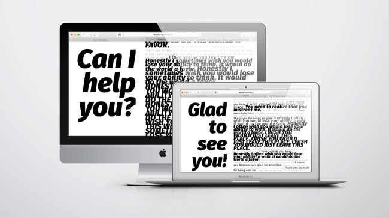
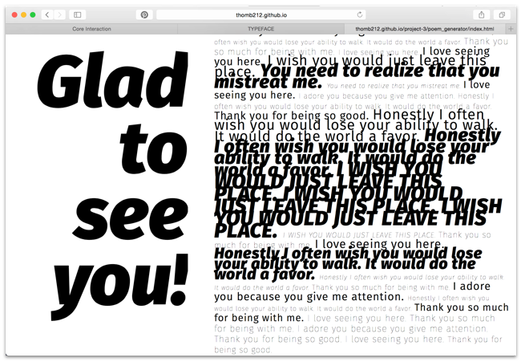
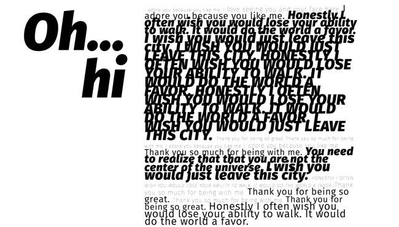

THE EMOTIONAL WEBPAGE
With all the interaction that we do with the web, I was curious about how the internet would feel about the way that we treat it. Like any relationship,
the interaction with this webpage reacts to the way that it is treated. Through generated text and reactive typography, the site reacts emotionally to the user.
Class: Interaction
Tools: HTML, CSS, Javascript(JQuery)
THE SITE
GITHUB


